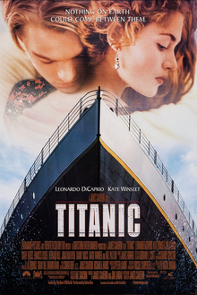

Hacksaw Ridge is a 2016 biographical war drama film directed by Mel Gibson and written by Andrew Knight and Robert Schenkkan, based on the 2004 documentary The Conscientious Objector. The film focuses on the World War II experiences of Desmond Doss, an American pacifist combat medic who, as a Seventh-day Adventist Christian, refused to carry or use a weapon or firearm of any kind. Doss became the first conscientious objector to be awarded the Medal of Honor, for service above and beyond the call of duty during the Battle of Okinawa. Andrew Garfield stars as Doss, with Sam Worthington, Luke Bracey, Teresa Palmer, Hugo Weaving, Rachel Griffiths, and Vince Vaughn in supporting roles.
The film was released in the United States on November 4, 2016, grossing $175.3 million worldwide and received largely positive reviews, with Gibson's direction and Garfield's performance earning notable praise.[5] Hacksaw Ridge was chosen by the American Film Institute as one of its top ten Movies of the Year,[6] and has received numerous awards and nominations.
Robert Schenkkan made the initial draft and Randall Wallace, who was previously attached to direct the film, rewrote the script. Andrew Knight polished the revised script. Gibson's partner Bruce Davey also produced the film, along with Paul Currie.
Casting The cast – Andrew Garfield, Vince Vaughn, Sam Worthington, Luke Bracey, Teresa Palmer, Rachel Griffiths, Richard Roxburgh, Luke Pegler, Richard Pyros, Ben Mingay, Firass Dirani, Nico Cortez, Michael Sheasby, Goran Kleut, Jacob Warner, Harry Greenwood, Damien Thomlinson, Ben O'Toole, Benedict Hardie, Robert Morgan, Ori Pfeffer, Milo Gibson, and Nathaniel Buzolic, Hugo Weaving, and Ryan Corr – was announced between November 2014 and October 2015. The younger Doss was played by Darcy Bryce.

Titanic is a 1997 American epic romance and disaster film directed, written, co-produced and co-edited by James Cameron. A fictionalized account of the sinking of the RMS Titanic, it stars Leonardo DiCaprio and Kate Winslet as members of different social classes who fall in love aboard the ship during its ill-fated maiden voyage.
Cameron's inspiration for the film came from his fascination with shipwrecks; he felt a love story interspersed with the human loss would be essential to convey the emotional impact of the disaster. Production began in 1995, when Cameron shot footage of the actual Titanic wreck. The modern scenes on the research vessel were shot on board the Akademik Mstislav Keldysh, which Cameron had used as a base when filming the wreck. Scale models, computer-generated imagery, and a reconstruction of the Titanic built at Baja Studios, at Playas de Rosarito in Baja California were used to re-create the sinking. The film was partially funded by Paramount Pictures and 20th Century Fox; the former handled distribution in North America while Fox released the film internationally. It was the most expensive film ever made at the time, with a production budget of $200 million.
Background
The name Titanic was derived from Greek mythology and meant 'gigantic'. Built in Belfast, Ireland, in the United Kingdom of Great Britain and Ireland (as it was then known), the RMS Titanic was the second of the three Olympic-class ocean liners—the first was the RMS Olympic and the third was the HMHS Britannic. Britannic was originally to be called Gigantic and was to be over 1,000 feet long. They were by far the largest vessels of the British shipping company White Star Line's fleet, which comprised 29 steamers and tenders in 1912. The three ships had their genesis in a discussion in mid-1907 between the White Star Line's chairman, J. Bruce Ismay, and the American financier J. P. Morgan, who controlled the White Star Line's parent corporation, the International Mercantile Marine Co.

Iron Man is a fictional superhero appearing in American comic books published by Marvel Comics. The character was co-created by writer and editor Stan Lee, developed by scripter Larry Lieber, and designed by artists Don Heck and Jack Kirby. The character made his first appearance in Tales of Suspense #39 (cover dated March 1963), and received his own title in Iron Man #1 (May 1968).
Solo series
After issue #99 (March 1968), the Tales of Suspense series was renamed Captain America. An Iron Man story appeared in the one-shot comic Iron Man and Sub-Mariner (April 1968), before the "Golden Avenger" made his solo debut with Iron Man #1 (May 1968).The series' indicia gives its copyright title Iron Man, while the trademarked cover logo of most issues is The Invincible Iron Man.
This initial series ended with issue #332 (Sept. 1996). Jim Lee, Scott Lobdell, and Jeph Loeb authored a second volume of the series which was drawn primarily by Whilce Portacio and Ryan Benjamin. This volume took place in a parallel universe and ran 13 issues (Nov. 1996 - Nov. 1997). Volume 3, whose first 25 issues were written by Kurt Busiek and then by Busiek and Roger Stern, ran 89 issues (Feb. 1998 - Dec. 2004). Later writers included Joe Quesada, Frank Tieri, Mike Grell, and John Jackson Miller. Issue #41 (June 2001) was additionally numbered #386, reflecting the start of dual numbering starting from the premiere issue of volume one in 1968. The final issue was dual-numbered as #434. The next Iron Man series, Iron Man vol. 4, debuted in early 2005 with the Warren Ellis-written storyline "Extremis", with artist Adi Granov. It ran 35 issues (Jan. 2005 - Jan. 2009), with the cover logo simply Iron Man beginning with issue #13, and Iron Man: Director of S.H.I.E.L.D., beginning issue #15. On the final three issues, the cover logo was overwritten by "War Machine, Weapon of S.H.I.E.L.D.",which led to the launch of a War Machine ongoing series.
The Invincible Iron Man vol. 1, by writer Matt Fraction and artist Salvador Larroca, began with a premiere issue cover-dated July 2008. For a seven-month overlap, Marvel published both volume four and volume five simultaneously.[32] This Invincible volume jumped its numbering of issues from #33 to #500, cover dated March 2011, to reflect the start from the premiere issue of volume one in 1968.
After the conclusion of The Invincible Iron Man a new Iron Man series was started as a part of Marvel Now!. Written by Kieron Gillen and illustrated by Greg Land, it began with issue #1 in November 2012.
Spider-man is a 2007 American superhero film based on the fictional Marvel Comics character Spider-Man. It was directed by Sam Raimi from a screenplay by Raimi, his older brother Ivan, and Alvin Sargent. It is the third and final installment in Raimi's original Spider-Man film trilogy, following Spider-Man (2002) and Spider-Man 2 (2004). The film stars Tobey Maguire, Kirsten Dunst, James Franco, Thomas Haden Church, Topher Grace, Bryce Dallas Howard, Rosemary Harris, Cliff Robertson, J. K. Simmons, and James Cromwell. It is the highest grossing Spider-Man film ever made. Following the events of Spider-Man 2, Peter Parker has become a cultural phenomenon as Spider-Man, while Mary Jane Watson continues her Broadway career. Harry Osborn still seeks vengeance for his father's death, and an escaped Flint Marko falls into a particle accelerator and is transformed into a shape-shifting sand manipulator. An extraterrestrial symbiote crashes to Earth and bonds with Peter, influencing his behavior for the worse.box
Creation and development
Richard Wentworth a.k.a. the Spider in the pulp magazine The Spider. Stan Lee stated that it was the name of this character that inspired him to create a character that would become Spider-Man.
In 1962, with the success of the Fantastic Four, Marvel Comics editor and head writer Stan Lee was casting about for a new superhero idea. He said the idea for Spider-Man arose from a surge in teenage demand for comic books, and the desire to create a character with whom teens could identify.1 In his autobiography, Lee cites the non-superhuman pulp magazine crime fighter the Spider as a great influence,130 and in a multitude of print and video interviews, Lee stated he was further inspired by seeing a spider climb up a wall—adding in his autobiography that he has told that story so often he has become unsure of whether or not this is true. Although at the time teenage superheroes were usually given names ending with "boy", Lee says he chose "Spider-Man" because he wanted the character to age as the series progressed, and moreover felt the name "Spider-Boy" would have made the character sound inferior to other superheroes. At that time Lee had to get only the consent of Marvel publisher Martin Goodman for the character's approval.